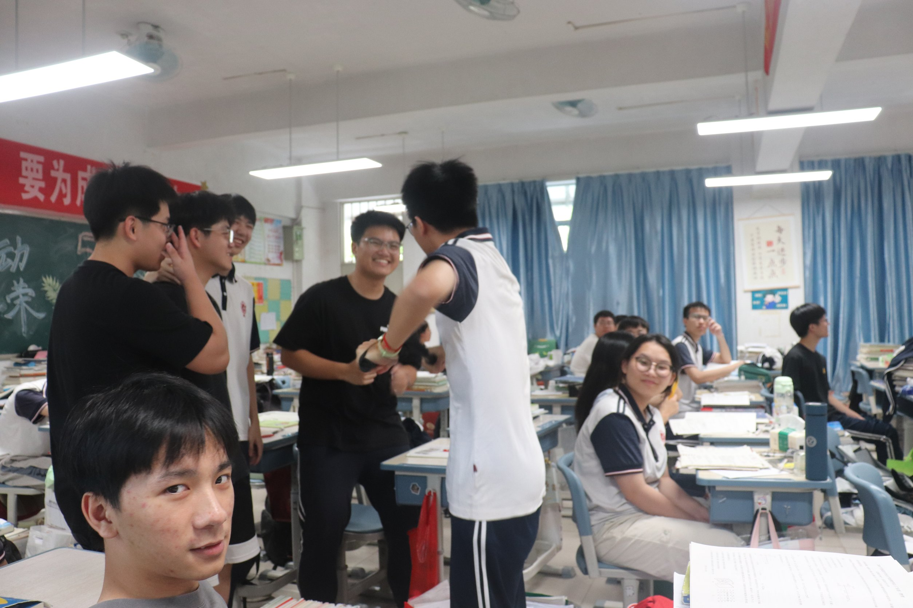

课间十分钟
桌上摊着卷子和水杯，谁站着聊天，谁回头看一眼镜头，谁在窗边笑——一个再普通不过的下午。
就是这样的下午，被你记住了。以后搬进更漂亮的教室、带更新的电脑，也别把它们弄丢。
「普通的日子攒够多了，就成了后来的「那时候」。」

桌上摊着卷子和水杯，谁站着聊天，谁回头看一眼镜头，谁在窗边笑——一个再普通不过的下午。
就是这样的下午，被你记住了。以后搬进更漂亮的教室、带更新的电脑，也别把它们弄丢。
「普通的日子攒够多了，就成了后来的「那时候」。」